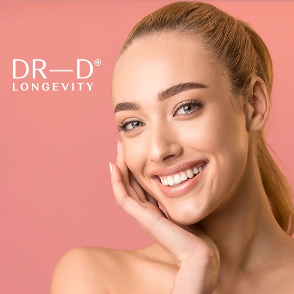
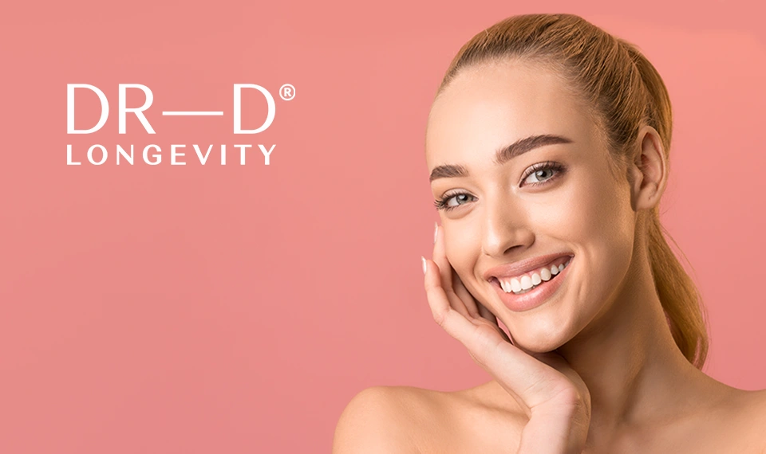
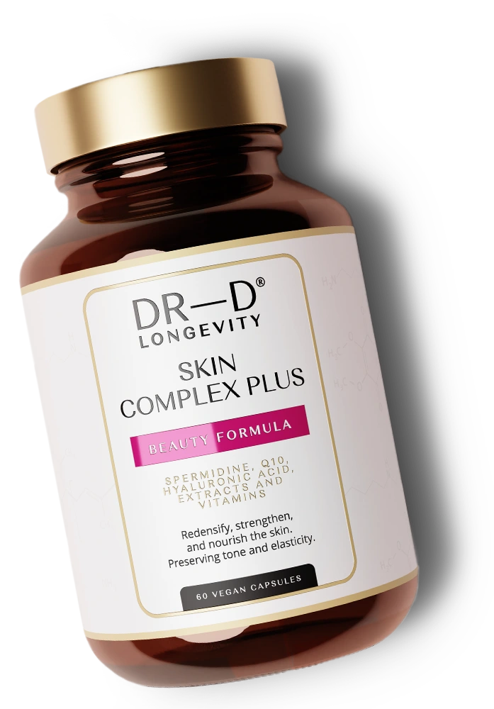
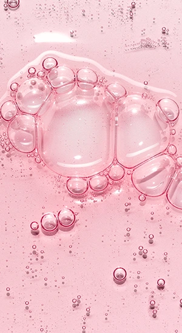
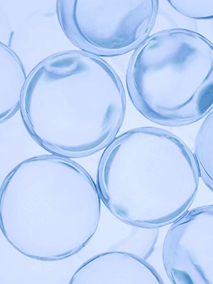
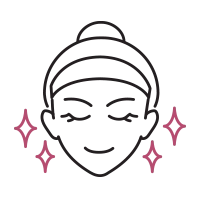
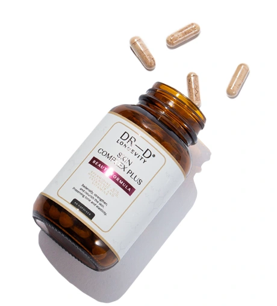
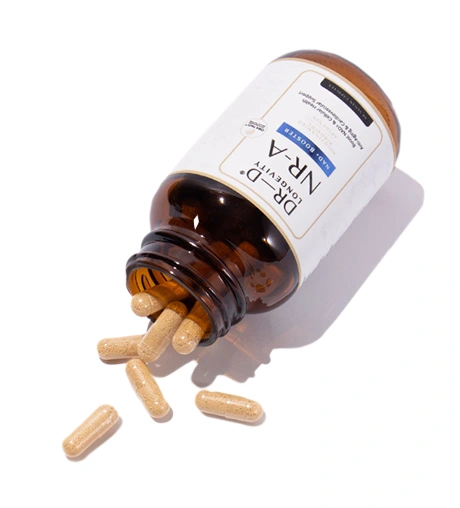
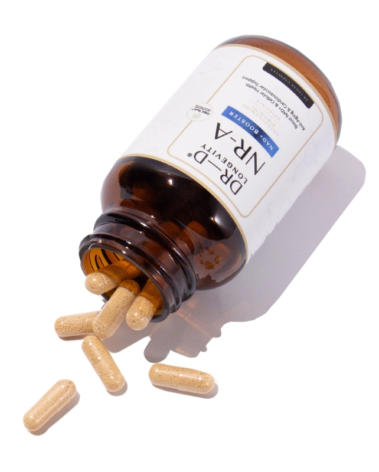

ХИАЛУРОНОВА КИСЕЛИНА
С мощните си хидратиращи свойства, които възстановяват еластичността на кожата и трайно
подобряват
нейната структура.
Тя привлича и задържа влагата в кожата, като я прави по-гладка и спомага за възвръщането на
младежкия вид.
Като една от основните съставки в Skin Complex Plus, хиалуроновата киселина осигурява
дълбока
хидратация и подмладяваща грижа за кожата.
В комбинация с коензим Q10 и спермидин, действието й е още по-ефективно, като подпомага
регенерацията на клетките и намалява признаците на стареене.

КОЕНЗИМ Q10
Е мощен антиоксидант, който подпомага клетъчното възстановяване и защитава кожата от свободните радикали, причинители на преждевременното стареене. С неговата помощ кожата се чувства по-освежена и подмладена, а при редовна употреба се намаляват признаците на умора и стрес.
СПЕРМИДИНЪТ
От своя страна насърчава клетъчното здраве и подобрява жизнеността на кожата. Стимулира производството на колаген и процеса на клетъчно обновяване.
КАКВО ОЩЕ?
Обогатена и подобрена формула с важни витамини като B3, D3, E и мощни минерали като селен, цинк и мед, които допринасят за:
-
Подобрена еластичност здравина на кожата
-
Защитава кожата от оксидативен стрес, причинен от UV лъчите
-

Поддържане на гладка и сияйна кожа


А когато мощните антиоксиданти и възстановяващите свойства на Skin Complex Plus се комбинират с...
Клетъчната регенерация на NR-A, резултатът е сияйна кожа и дълготрайно здраве.



Д-р Радина Денкова е човек, ръководен от науката, с непрестанен стремеж към красотата във всичките
ѝ форми. Тя е сред най-утвърдените европейски специалисти с повече от 30 години опит в естетичната
дерматология.
Д-р Денкова следва холистичния подход в дерматологията и здравето изобщо. Вярва, че красотата
започва от грижата за всяка клетка в тялото.
Завършва медицинското си образование в България. По-късно специализира в Бон, Париж и Виена.
Основател е и собственик на водещ център по естетична дерматология в България, който отскоро отвори
врати и в Австрия.
През последните години Радина Денкова е водещ лектор в областта на естетичната дерматология в над 50
страни по цял свят.